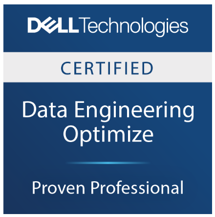
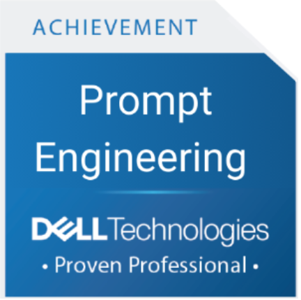
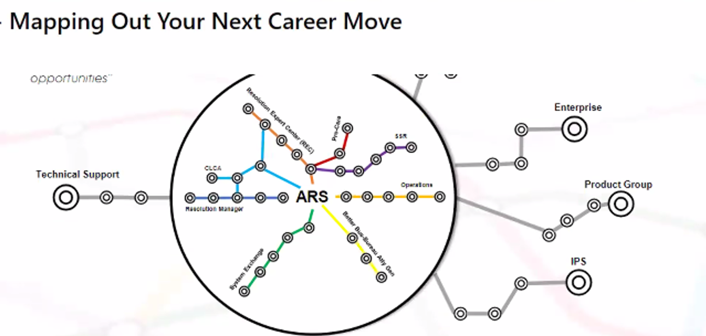

Sriprajna KJ
I have close to 20 years of experience in:
- Scoping and creating technical/developer content,
- Leading documentation projects,
- Managing technical writing teams,
- Content Strategy & Storytelling,
- Curriculum Design,
- Instructional Design (ADDIE, DITA),
- Learning Needs Analysis & ROI Assessment
Working in software engineering and product teams, I’ve created a range of technical content, including technical specifications, API documentation, user guides, technical certification courses, content for developer portals, and implementation guides for customer solutions.
Led business and learning services planning, including roadmaps, learning needs analysis, demand prioritization, KPI tracking, and program performance management using analytics dashboards. Supported the full lifecycle of customer and partner enablement initiatives—from needs analysis and solution design to program rollout, adoption tracking, and impact measurement—as a consultative partner to sales and engineering teams.Love high end research, and have IEE publication presented at IEEE International Conference on Advances in Recent Technologies in Communication and Computing.
Current role
In my role as a Lead Advisor in the Customer Technical Training team at Dell Technologies Learning India, my focus is on collaborating with customer engagement teams for technical storytelling, raising the bar of technical content, accelerating software engineers’ efforts with writing, and innovating on behalf of our customers. I also hold the Association for Talent Development (ATD) Master Instructional Designer, and the Associate - Cloud Infrastructure and Services , Dell Zero Trust Design, Associate-Storage, Dell Gen AI and Prompt Engineering certifications from Dell and ATD.
Skills
- Technical communication
- Technical content strategy
- Content Strategy, roadmapping
- Product documentation
- UX Writing
- Content design and development
- Implementation guides
- Online help
- User guides
- Release notes
- Technical specifications
- Developer docs
- Wikis
- API and SDK documentation
- Certification course, Skill enablement curriculum
- Product content
- Developer Portals
- Markdown
- Articulate Storyline, Rise
- Flash, Camtasia
- Photoshop, FrameMaker
- Confluence
- Microsoft Office
- Help Authoring (Madcap Flare, RoboHelp)
- Adobe Experience Manager (AEM)
- oXyGen XML Editor
- XMetal XML Editor
- Xyleme LCMS
- Saba
- Redoc
- Wikis
- Confluence
- Wordpress
- AsciiDoc
- Figma
- Synthesia
- JIRA
- Swagger
- Git
- Adobe Analytics, Firefly
- Postman
- High end researcher on Mobile Databases, Data Engineering
- Enterprise Resource Groups
- Conference wrangler
Documentation Projects List
This page contains examples of technical content I have managed and delivered over different software/IT projects, broken down by types of content deliverables.
Note: Click each deliverable to read more about the context, problems, my contributions, and impact delivered through the project.
Technical Administration guides

Worked in the Server team to plan, manage, create and deliver technical content for customer solutions.
General Information Project

Working as a Technical Writer Advocate, contributed to, and managed product docs. Led general information architecture and content strategy projects.
Technical Certification courses

AI/ML Learning Path
Description: A complete learning path covering foundational to advanced AI/ML concepts. Includes videos, labs, assessments, and instructor-led modules.
Contribution: Curriculum architecture, content development, video scripting, demo creation, GenAI augmentation.
Technical Certification curriculum Design

Data Engineering Course Suite
Description: Multi-course program covering Data Storage, ETL, Pipelines, Cloud, and NoSQL.
Contribution: Course design, graphics briefs, FAQs, practice labs, learner journey mapping.
Third Party Product Support Knowledge Base

Wrote knowledge base single page reference guide for various third party products for Dell capturing product enhancements, new features and documentation updates, and company news.
Interactive Learning Videos
Mindmap Learner Journey Demo

Description: Visual mindmap of the enterprise learning ecosystem and journey walkthrough videos.
Contribution: Research, mapping, storyboard, final asset creation.


 The award was in recognition of best content designed for advance in enterprise wide competencies & skills development. The curriculum and design aligned very well with organizational objectives and highly impactful
The award was in recognition of best content designed for advance in enterprise wide competencies & skills development. The curriculum and design aligned very well with organizational objectives and highly impactful